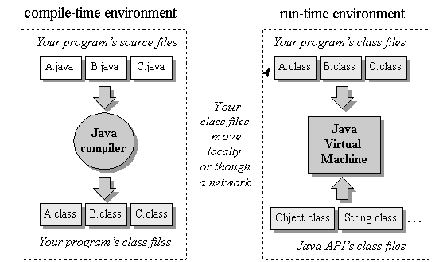
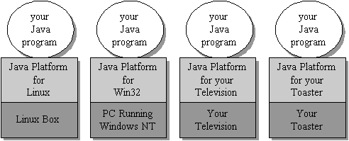
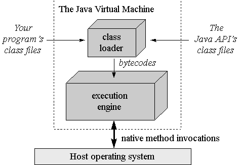
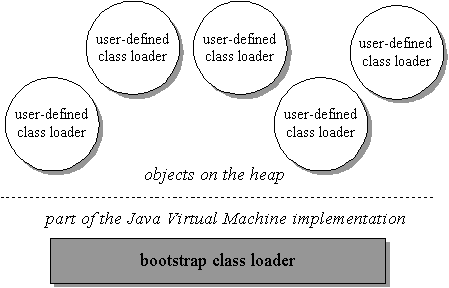
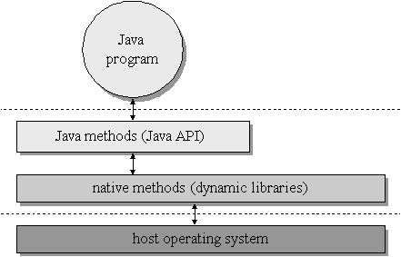

At the heart of Java technology lies the Java Virtual Machine--the abstract computer on which all Java programs run. Although the name "Java" is generally used to refer to the Java programming language, there is more to Java than the language. The Java Virtual Machine, Java API, and Java class file work together with the Java language to make the Java phenomenon possible. Java phenomenon = JVM + Java API + Java class file + Java language
The first four chapters of this book (Part I. "Java's Architecture") show how the Java Virtual Machine fits into the big picture. They show how the virtual machine relates to the other components of Java's architecture: the class file, API, and language. They describe the motivation behind--and the implications of--the overall design of Java technology. 前四章主要讲什么：围绕着JVM展开
This chapter gives an introduction to Java as a technology. It gives an overview of Java's architecture, discusses why Java is important, and looks at Java's pros and cons. 本章内容主要讲什么：Java's architecture
Over the ages people have used tools to help them accomplish tasks, but lately their tools have been getting smarter and interconnected. Microprocessors have appeared inside many commonly used items, and increasingly, they have been connected to networks. As the heart of personal computers and workstations, for example, microprocessors have been routinely connected to networks. They have also appeared inside devices with more specific functionality than the personal computer or the workstation. Televisions, VCRs, audio components, fax machines, scanners, printers, cell phones, personal digital assistants, pagers, and wrist- watches --all have been enhanced with microprocessors; most have been connected to networks. 这里主要是讲了microprocessors和networks。使用microprocessors的地方越来越多，而且常常是要连接到networks。
Given the increasing capabilities and decreasing costs of information processing and data networking technologies, the network is rapidly extending its reach. The emerging infrastructure of smart devices and computers interconnected by networks represents a new environment for software--an environment that presents new challenges and offers new opportunities to software developers. 通过networks相互连接的smart devices and computers，为软件开发者提供了一个新的环境，面临着机遇和挑战。
Java technology is a tool well suited to help you meet the challenges and seize the opportunities presented by the emerging computing environment. Java was designed for networks. Its suitability for networked environments is inherent in its architecture, which enables secure, robust, platform-independent programs to be delivered across networks and run on a great variety of computers and devices. Java technology可以帮助我们抓住这个机遇和适应这些挑战；因为Java就是依据network的特点而设计的。
One challenge presented to developers by a networked computing environment is the wide range of devices that networks interconnect. A typical network usually has many different kinds of attached devices, with diverse hardware architectures, operating systems, and purposes. Java addresses this challenge by enabling the creation of platform-independent programs. A single Java program can run unchanged on a wide range of computers and devices. Compared with programs compiled for a specific hardware and operating system, platform-independent programs written in Java can be easier and cheaper to develop, administer, and maintain. 第一个挑战：通过network互相连接的设备使用不同的硬件、操作系统。Java可以满足这个挑战，因为是面向JVM编程，无需考虑底层的硬件和操作系统
Another challenge the network presents to software developers is security. In addition to their potential for good, networks represent an avenue for malicious programmers to steal or destroy information, steal computing resources, or simply be a nuisance. Virus writers, for example, can place their wares on the network for unsuspecting users to download. Java addresses the security challenge by providing an environment in which programs downloaded across a network can be run with customizable degrees of security. A downloaded program can do anything it wants inside the boundaries of the secure environment, but can't read or write data outside those boundaries. 第二个挑战：通过network可以传播恶意软件，造成安全隐患。Java可以满足这个挑战，因为它提供了一个安全的运行环境
One aspect of security is simple program robustness. Java's architecture guarantees a certain level of program robustness by preventing certain types of pernicious bugs, such as memory corruption, from ever occurring in Java programs. This establishes trust that downloaded code will not inadvertently (or intentionally) crash, but it also has an important benefit unrelated to networks: it makes programmers more productive. Because Java prevents many types of bugs from ever occurring, Java programmers need not spend time trying to find and fix them. 通过Java写的程序很“强壮”（robustness），不容易崩溃
One opportunity created by an omnipresent network is online software distribution. Java takes advantage of this opportunity by enabling the transmission of binary code in small pieces across networks. This capability can make Java programs easier and cheaper to deliver than programs that are not network-mobile. It can also simplify version control. Because the most recent version of a Java program can be delivered on-demand across a network, you needn't worry about what version your end-users are running. They will always get the most recent version each time they use your program. 第一个机遇：随着network的发展，出现了online software distribution。Java抓住了这个机遇，可以传输binary code来实现。
Platform independence, security, and network-mobility--these three facets of Java's architecture work together to make Java suitable for the emerging networked computing environment. Because Java programs are platform independent, network-delivery of software is more practical. The same version of a program can be delivered to all the computers and devices the network interconnects. Java's built-in security framework also helps make network-delivery of software more practical. By reducing risk, the security framework helps to build trust in a new paradigm of network-mobile code. Java programs = platform independent + security + network-mobility
Java's architecture arises out of four distinct but interrelated technologies, each of which is defined by a separate specification from Sun Microsystems:
When you write and run a Java program, you are tapping the power of these four technologies. You express the program in source files written in the Java programming language, compile the source to Java class files, and run the class files on a Java Virtual Machine. When you write your program, you access system resources (such as I/O, for example) by calling methods in the classes that implement the Java Application Programming Interface, or Java API. As your program runs, it fulfills your program's Java API calls by invoking methods in class files that implement the Java API. You can see the relationship between these four parts in Figure 1-1. 当写Java programs和运行Java programs，就是在运用这四个技术

Figure 1-1. The Java programming environment.
Together, the Java Virtual Machine and Java API form a "platform" for which all Java programs are compiled. In addition to being called the Java runtime system, the combination of the Java Virtual Machine and Java API is called the Java Platform. Java programs can run on many different kinds of computers because the Java Platform can itself be implemented in software. As you can see in Figure 1-2, a Java program can run anywhere the Java Platform is present. Java Platform = JVM + Java API

Figure 1-2. Java programs run on top of the Java Platform.
At the heart of Java's network-orientation is the Java Virtual Machine, which supports all three prongs of Java's network-oriented architecture: platform independence, security, and network-mobility. Java Platform --> platform independence, security, and network-mobility
The Java Virtual Machine is an abstract computer. Its specification defines certain features every Java Virtual Machine must have, but leaves many choices to the designers of each implementation. For example, although all Java Virtual Machines must be able to execute Java bytecodes, they may use any technique to execute them. Also, the specification is flexible enough to allow a Java Virtual Machine to be implemented either completely in software or to varying degrees in hardware. The flexible nature of the Java Virtual Machine's specification enables it to be implemented on a wide variety of computers and devices. JVM specification对于要实现的feature定义的非常“灵活”（flexible enough），具体的JVM implementation可以选择合适的实现方式。
A Java Virtual Machine's main job is to load class files and execute the bytecodes they contain. As you can see in Figure 1-3, the Java Virtual Machine contains a class loader, which loads class files from both the program and the Java API. Only those class files from the Java API that are actually needed by a running program are loaded into the virtual machine. The bytecodes are executed in an execution engine, which is one part of the virtual machine that can vary in different implementations. On a Java Virtual Machine implemented in software, the simplest kind of execution engine just interprets the bytecodes one at a time. Another kind of execution engine, one that is faster but requires more memory, is a just-in-time compiler. In this scheme, the bytecodes of a method are compiled to native machine code the first time the method is invoked. The native machine code for the method is then cached, so it can be re-used the next time that same method is invoked. On a Java Virtual Machine built on top of a chip that executes Java bytecodes natively, the execution engine is actually embedded in the chip. JVM的主要工作就是加载class files，并执行其中的bytecode内容。
Figure 1-3. A basic block diagram of the Java virtual machine.
Sometimes the Java Virtual Machine is called the Java interpreter; however, given the various ways in which bytecodes can be executed, this term can be misleading. While "Java interpreter" is a reasonable name for a Java Virtual Machine that interprets bytecodes, virtual machines also use other techniques (such as just-in-time compiling) to execute bytecodes. Therefore, although all Java interpreters are Java Virtual Machines, not all Java Virtual Machines are Java interpreters. 所有的Java interpreters都是JVM，但并不是所有的JVM都是Java interpreters，也有可能使用其它的技术，例如JIT。
When running on a Java Virtual Machine that is implemented in software on top of a host operating system, a Java program interacts with the host by invoking native methods. In Java, there are two kinds of methods: Java and native. A Java method is written in the Java language, compiled to bytecodes, and stored in class files. A native method is written in some other language, such as C, C++, or assembly, and compiled to the native machine code of a particular processor. Native methods are stored in a dynamically linked library whose exact form is platform specific. While Java methods are platform independent, native methods are not. When a running Java program calls a native method, the virtual machine loads the dynamic library that contains the native method and invokes it. As you can see in Figure 1-4, native methods are the connection between a Java program and an underlying host operating system. 在Java当中，有两种方法，一种是java method，另一种是native method。

Figure 1-4. A Java virtual machine implemented in software on top of a host operating system.
You can use native methods to give your Java programs direct access to the resources of the underlying operating system. Their use, however, will render your program platform specific. This is because the dynamic libraries containing the native methods are platform specific. In addition, the use of native methods may render your program specific to a particular implementation of the Java Platform. One native method interface--the Java Native Interface, or JNI --enables native methods to work with any Java Platform implementation on a particular host computer. Vendors of the Java Platform, however, are not required to support JNI. They may provide their own proprietary native method interfaces in addition to (or in place of) JNI. 这里对native method进行了介绍。
Java gives you a choice. If you want to access resources of a particular host that are unavailable through the Java API, you can write a platform-specific Java program that calls native methods. If you want to keep your program platform independent, however, you must call only Java methods and access the system resources of the underlying operating system through the Java API. 作为software developer，你可以选择使用java method，还是native method。
One aspect of the Java Virtual Machine that plays an important role in both security and network-mobility is the class loader architecture. In the block diagrams of Figures 1-3 and 1-4, a single mysterious cube identifies itself as "the class loader," but in reality there may be more than one class loader inside a Java Virtual Machine. Thus the class loader cube of the block diagram actually represents a subsystem that may involve many class loaders. The Java Virtual Machine has a flexible class loader architecture that allows a Java application to load classes in custom ways. Class Loader --> security and network-mobility
A Java application can use two types of class loaders: a "primordial" class loader and class loader objects. The primordial class loader (there is only one of them) is a part of the Java Virtual Machine implementation. For example, if a Java Virtual Machine is implemented as a C program on top of an existing operating system, then the primordial class loader will be part of that C program. The primordial class loader loads trusted classes, including the classes of the Java API, usually from the local disk. Class Loader分为两种类型，一种是primordial class loader，另一种是class loader objects。这里主要介绍primordial class loader。
At run-time, a Java application can install class loader objects that load classes in custom ways, such as by downloading class files across a network. The Java Virtual Machine considers any class it loads through the primordial class loader to be trusted, regardless of whether or not the class is part of the Java API. Classes it loads through class loader objects, however, it views with suspicion--by default, it considers them to be untrusted. While the primordial class loader is an intrinsic part of the virtual machine implementation, class loader objects are not. Instead, class loader objects are written in Java, compiled to class files, loaded into the virtual machine, and instantiated just like any other object. They are really just another part of the executable code of a running Java application. You can see a graphical depiction of this architecture in Figure 1-5. 这里主要介绍class loader objects，它们就存储在Heap内存空间中。

Figure 1-5. Java's class loader architecture.
Because of class loader objects, you don't have to know at compile-time all the classes that may ultimately take part in a running Java application. They enable you to dynamically extend a Java application at run-time. As it runs, your application can determine what extra classes it needs and load them through one or more class loader objects. Because you write the class loader in Java, you can load classes in any manner. You can download them across a network, get them out of some kind of database, or even calculate them on the fly. 这里主要介绍class loader objects加载class files的三种场景：从网络上下载、从数据库中读取、时时计算生成。
For each class it loads, the Java Virtual Machine keeps track of which class loader--whether primordial or object--loaded the class.
When a loaded class first refers to another class, the virtual machine requests the referenced class from the same class loader that originally loaded the referencing class.
For example, if the virtual machine loads class Volcano through a particular class loader,
it will attempt to load any classes Volcano refers to through the same class loader.
If Volcano refers to a class named Lava, perhaps by invoking a method in class Lava,
the virtual machine will request Lava from the class loader object that loaded Volcano.
The Lava class returned by the class loader is dynamically linked with class Volcano.
在每一个class中，都会记录加载它的class loader是哪一个。同时，这里也讲了class loader的一种使用情况：Volcano和Lava这两个class file都是由同一个class loader来进行加载。
Because the Java Virtual Machine takes this approach to loading classes, classes can by default only see other classes that were loaded by the same class loader. This is how Java's architecture enables you to create multiple name-spaces inside a single Java application. Each class loader in your running Java program maintains its own name-space, which is populated by the names of all the classes it has loaded. 每一个class loader，都有一个对应的name-spaces；在name-spaces中，包含了由该class loader加载的所有的class。
A Java application can instantiate multiple class loader objects either from the same class or from multiple classes. It can, therefore, create as many (and as many different kinds of) class loader objects as it needs. Classes loaded by different class loaders are in different name-spaces and cannot gain access to each other unless the application explicitly allows it. When you write a Java application, you can segregate classes loaded from different sources into different name-spaces. In this way, you can use Java's class loader architecture to control any interaction between code loaded from different sources. You can prevent hostile code from gaining access to and subverting friendly code. class loader可以帮助我们实现security。
One example of dynamic extension is the web browser, which uses class loader objects to download the class files for an applet across a network. A web browser fires off a Java application that installs a class loader object--usually called an applet class loader --that knows how to request class files from an HTTP server. Applets are an example of dynamic extension, because the Java application doesn't know when it starts which class files the browser will ask it to download across the network. The class files to download are determined at run-time, as the browser encounters pages that contain Java applets. 这里举了一个class loader进行dynamic extension的例子。
The Java application started by the web browser usually creates a different applet class loader object for each location on the network from which it retrieves class files. As a result, class files from different sources are loaded by different class loader objects. This places them into different name-spaces inside the host Java application. Because the class files for applets from different sources are placed in separate name-spaces, the code of a malicious applet is restricted from interfering directly with class files downloaded from any other source. 继续讲上面的例子。
By allowing you to instantiate class loader objects that know how to download class files across a network, Java's class loader architecture supports network-mobility. It supports security be allowing you to load class files from different sources through different class loader objects. This puts the class files from different sources into different name-spaces, which allows you to restrict or prevent access between code loaded from different sources. 再次回归到主题：class loader --> network-mobility and security。
The Java class file helps make Java suitable for networks mainly in the areas of platform-independence and network-mobility. Its role in platform independence is serving as a binary form for Java programs that is expected by the Java Virtual Machine but independent of underlying host platforms. This approach breaks with the tradition followed by languages such as C or C++. Programs written in these languages are most often compiled and linked into a single binary executable file specific to a particular hardware platform and operating system. In general, a binary executable file for one platform won't work on another. The Java class file, by contrast, is a binary file that can be run on any hardware platform and operating system that hosts the Java Virtual Machine. Java class file --> platform-independence and network-mobility。
When you compile and link a C++ program, the executable binary file you get is specific to a particular target hardware platform and operating system because it contains machine language specific to the target processor. A Java compiler, by contrast, translates the instructions of the Java source files into bytecodes, the "machine language" of the Java Virtual Machine. platform-independence
In addition to processor-specific machine language, another platform-dependent attribute of a traditional binary executable file is the byte order of integers. In executable binary files for the Intel X86 family of processors, for example, the byte order is little-endian, or lower order byte first. In executable files for the PowerPC chip, however, the byte order is big-endian, or higher order byte first. In a Java class file, byte order is big-endian irrespective of what platform generated the file and independent of whatever platforms may eventually use it. Java class file使用big-endian
In addition to its support for platform independence, the Java class file plays a critical role in Java's architectural support for network-mobility. First, class files were designed to be compact, so they can more quickly move across a network. Also, because Java programs are dynamically linked and dynamically extensible, class files can be downloaded as needed. This feature helps a Java application manage the time it takes to download class files across a network, so the end-user's wait time can be kept to a minimum. network-mobility
The Java API helps make Java suitable for networks through its support for platform independence and security. The Java API is set of runtime libraries that give you a standard way to access the system resources of a host computer. When you write a Java program, you assume the class files of the Java API will be available at any Java Virtual Machine that may ever have the privilege of running your program. This is a safe assumption because the Java Virtual Machine and the class files for the Java API are the required components of any implementation of the Java Platform. When you run a Java program, the virtual machine loads the Java API class files that are referred to by your program's class files. The combination of all loaded class files (from your program and from the Java API) and any loaded dynamic libraries (containing native methods) constitute the full program executed by the Java Virtual Machine. Java API --> platform independence and security
The class files of the Java API are inherently specific to the host platform. The API's functionality must be implemented expressly for a particular platform before that platform can host Java programs. In a system where bytecodes are executed directly in silicon (on a "Java chip") the API will likely be implemented as part of a Java-based operating system. On a system where the virtual machine is implemented in software on top of a non-Java operating system, the Java API will access the host resources through native methods. As you can see in Figure 1-6, the class files of the Java API invoke native methods so your Java program doesn't have to. In this manner, the Java API's class files provide a Java program with a standard, platform-independent interface to the underlying host. To the Java program, the Java API looks the same and behaves predictably no matter what platform happens to be underneath. Precisely because the Java Virtual Machine and Java API are implemented specifically for each particular host platform, Java programs themselves can be platform independent. platform independence

Figure 1-6. A platform-independent Java program.
The internal design of the Java API is also geared towards platform independence. For example, the graphical user interface library of the Java API, called the Abstract Windows Toolkit (or AWT), is designed to facilitate the creation of user interfaces that work on all platforms. Creating platform-independent user interfaces is inherently difficult, given that the native look and feel of user interfaces vary greatly from one platform to another. The AWT library's architecture does not coerce implementations of the Java API to give Java programs a user interface that looks exactly the same everywhere. Instead, it encourages implementations to adopt the look and feel of the underlying platform. Also, because the size of fonts, buttons, and other user interface components will vary from platform to platform, the AWT includes layout managers to position the elements of a window or dialog box at run-time. Rather than forcing you to indicate exact X and Y coordinates for the various elements that constitute, say, a dialog box, the layout manager positions them when your dialog box is displayed. With the aim of making the dialog look its best on each platform, the layout manager will very likely position the dialog box elements slightly differently on different platforms. In these ways and others, the internal architecture of the Java API is aimed at facilitating the platform independence of the Java programs that use it. Java API --> platform independence
In addition to facilitating platform independence, the Java API contributes to Java's security model. The methods of the Java API, before they perform any action that could potentially be harmful (such as writing to the local disk), check for permission from the security manager. The security manager is a special object that a Java application can instantiate that defines a custom security policy for the application. A security manager could, for example, forbid access to the local disk. If the application requested a local disk write by invoking a method from the Java API, that method would first check with the security manager. Upon learning from the security manager that disk access is forbidden, the Java API would refuse to perform the write. By enforcing the security policy established by the security manager, the Java API helps to establish a safe environment in which you can run potentially unsafe code. Java API --> security
Although Java was designed for the network, its utility is not restricted to networks. Platform independence, network-mobility, and security are of prime importance in a networked computing environment, but you may not always find yourself facing network-oriented problems. As a result, you may not always want to write programs that are platform independent. You may not always want to deliver your programs across networks or limit their capabilities with security restrictions. There may be times when you use Java technology primarily because you want to get the advantages of the Java programming language. Java Programming Language可以解决更多的问题，不只是网络问题（network-oriented problems）
As a whole, Java technology leans heavily in the direction of networks, but the Java programming language is quite general-purpose. The Java language allows you to write programs that take advantage of many software technologies: Java Programming Language是一个general-purpose的编程语言
Instead of serving as a test bed for new and experimental software technologies, the Java language combines in a new way concepts and techniques that have already been tried and proven in other languages. These features make the Java programming language a powerful general-purpose tool that you can apply to a variety of situations, independent of whether or not they involve a network. 再次强调Java Programming Language是一个general-purpose的编程语言
At the beginning of a new project, you may be faced with the question, "Should I use C++ (or some other language) for my next project, or should I use Java?" As an implementation language, Java has some advantages and some disadvantages over other languages. One of the most compelling reasons for using Java as a language is that it can enhance developer productivity. The main disadvantage is slower execution speed. Java Programming Language有自己的优点和缺点
Java is, first and foremost, an object-oriented language. One promise of object-orientation is that it promotes the re-use of code, resulting in better productivity for developers. This may make Java more attractive than a procedural language such as C, but doesn't add much value to Java over C++, the object-oriented language that Java most closely resembles. Yet compared to C++, Java has some significant differences that can improve a developer's productivity. This productivity boost comes mostly from Java's restrictions on direct memory manipulation. Java Programming Language是一个面向对象的语言，可以提高开发效率。
In Java, there is no way to directly access memory by arbitrarily casting pointers to a different type or by using pointer arithmetic, as there is in C++.
Java requires that you strictly obey rules of type when working with objects.
If you have a reference (similar to a pointer in C++) to an object of type Mountain,
you can only manipulate it as a Mountain.
You can't cast the reference to type Lava and manipulate the memory as if it were a Lava.
Neither can you simply add an arbitrary offset to the reference, as pointer arithmetic allows you to do in C++.
You can, in Java, cast a reference to a different type, but only if the object really is of the new type.
For example, if the Mountain reference actually referred to an instance of class Volcano (a specialized type of Mountain),
you could cast the Mountain reference to a Volcano reference.
Because Java enforces strict type rules at run-time, you are not able to directly manipulate memory in ways that can accidentally corrupt it.
As a result, you can't ever create certain kinds of bugs in Java programs that regularly harass C++ programmers and reduce their productivity.
In Java, there is no way to directly access memory
Another way Java prevents you from inadvertently corrupting memory is through automatic garbage collection.
Java has a new operator, just like C++, that you use to allocate memory on the heap for a new object.
But unlike C++, Java has no corresponding delete operator,
which C++ programmers use to free the memory for an object that is no longer needed by the program.
In Java, you merely stop referencing an object, and at some later time, the garbage collector will reclaim the memory occupied by the object.
Java使用garbage collector重复利用内存空间。
The garbage collector prevents Java programmers from needing to explicitly indicate which objects should be freed. As a C++ project grows in size and complexity, it often becomes increasingly difficult for programmers to determine when an object should be freed, or even whether an object has already been freed. This results in memory leaks, in which unused objects are never freed, and memory corruption, in which the same object is accidentally freed multiple times. Both kinds of memory troubles cause C++ programs to crash, but in ways that make it difficult to track down the exact source of the problem. You can be more productive in Java in part because you don't have to chase down memory corruption bugs. But perhaps more significantly, you can be more productive because when you no longer have to worry about explicitly freeing memory, program design becomes easier. 继续讲garbage collector
A third way Java protects the integrity of memory at run-time is array bounds checking. In C++, arrays are really shorthand for pointer arithmetic, which brings with it the potential for memory corruption. C++ allows you to declare an array of ten items, then write to the eleventh item, even though that tramples on memory. In Java, arrays are full-fledged objects, and array bounds are checked each time an array is used. If you create an array of ten items in Java and try to write to the eleventh, Java will throw an exception. Java won't let you corrupt memory by writing beyond the end of an array. Java会检查array bounds
One final example of how Java ensures program robustness is by checking object references,
each time they are used, to make sure they are not null.
In C++, using a null pointer usually results in a program crash.
In Java, using a null reference results in an exception being thrown.
Java会检查object references是否为null
The productivity boost you can get just by using the Java language results in quicker development cycles and lower development costs. You can realize further cost savings if you take advantage of the potential platform independence of Java programs. Even if you are not concerned about a network, you may still want to deliver a program on multiple platforms. Java can make support for multiple platforms easier, and therefore, cheaper. platform independence of Java programs
As you might expect, however, all this good news about productivity, quick development cycles, and lower development costs does not come without a catch. The designers of Java made tradeoffs. They designed an architecture that favors network-oriented features--such as platform-independence, program robustness, security, and network-mobility--over other concerns. The primary tradeoff, and thus the primary hit you will take if you use Java, is execution speed. Java programs的执行速度慢
Java's extra run-time housekeeping--array bounds checking, type-safe reference casting, checking for null references, and garbage-collection--will cause your Java program to be slower than an equivalent C++ program. Yet often the tradeoff in speed is made up for in productivity increases enjoyed by the developer and robustness enjoyed by the end-user. And often, the Java program simply runs quickly enough to satisfy end-users. Java programs的执行速度慢，但还是在可以接受的范围内
Another speed hit, and one that can be far more substantial, arises from the interpreted nature of Java programs. Whereas C++ programs are usually compiled to native machine code, which is stored in a monolithic executable file, Java programs are usually compiled to Java bytecodes, which are stored in class files. When the Java program runs, a virtual machine loads the class files and executes the bytecodes they contain. When running on a virtual machine that interprets bytecodes, a Java program may be 10 to 30 times slower than an equivalent C++ program compiled to native machine code. Java programs是“解释”（interpret）执行，因此速度慢
This performance degradation is primarily a tradeoff in exchange for platform independence. Instead of compiling a Java program to platform-specific native machine code, you compile it to platform independent Java bytecodes. Native machine code can run fast, but only on the native platform. Java bytecodes (when interpreted) run slowly, but can be executed on any platform that hosts the Java Virtual Machine. Java programs是“解释”（interpret）执行慢，但是platform independence
Fortunately, other techniques can improve the performance of bytecode execution. For example, just-in-time compiling can speed up program execution 7 to 10 times over interpreting. Rather than merely interpreting a method's bytecodes, a virtual machine can compile the bytecodes to native machine code the first time the method is invoked. (The method is compiled "just-in-time" for its first use by the virtual machine.) The native machine code version of the method is then cached by the virtual machine, and re-used the next time the method is invoked by the program. Execution techniques such as just-in-time compiling allows Java programs to be delivered as platform-independent class files, and still, in many cases, run quickly enough to satisfy end-users. just-in-time compiling可以提高Java programs的执行速度
Raw execution speed is not always the most important factor determining an end-user's perception of a program's performance. In some situations, programs spend much of their time waiting for data to come across a network or waiting for the user to hit another key on the keyboard. In such cases, even executing the program via an interpreter may be adequate. For more demanding applications, a just-in-time compiler may be sufficient to satisfy the end-user's need for speed. 单纯的考虑执行速度，是不可取的。程序执行过程中，等待用户输入的时间、进行网络传输的时间，可能要比Java programs执行消耗的时间要多的多。
The simulation applets incorporated into Part II of this book are an example of a type of program for which execution speed is not that critical. Most of time in these programs is spent waiting for the user to click a button. For many programs, however, execution speed is extremely important. For such programs, if you want to use the Java language, you may have to execute part or all of your program natively. One way to do that is to run the class files on a virtual machine built on top of a chip that executes bytecodes directly in silicon. If you (or your end-users) don't have such a chip handy, another possibility is to identify time-critical portions of your program and implement them as native methods. Using native methods yields a program that is delivered as a combination of platform independent class files and platform-specific dynamic libraries. The bytecodes from the class files are executed by interpreting or just-in-time compiling, but the time-critical code stored in the dynamic libraries is executed natively. 有些程序，对于执行速度的要求非常高，可以选择把关键部分的代码编译成native methods，然后在Java Programs中调用。
One final alternative is to compile the Java program to a platform-specific, monolithic native executable, as is usually done with C++ programs. Such a strategy bypasses class files entirely, and generates a platform-specific binary. A monolithic native executable can be faster than the same program just-in-time compiled for several reasons. First, just-in-time compilers do not usually do as much optimization as native compilers because of the time trade-off. When compiling a Java program to a monolithic native executable, you have plenty of time to spend performing optimization. When just-in-time compiling, however, time is more scarce. The whole point of just-in-time compiling is to speed up program execution on the fly, but at some stage the speedup gained by certain optimizations will not be worth the time spent doing the optimization. Another reason using just-in-time compiler is slower than a native executable is the just-in-time compiled program will likely occupy a larger memory footprint. The larger footprint could require more paging (or swapping) on a virtual memory system. 最后的可选策略，就是将Java Programs编译成platform-specific, monolithic native executable。
So when you compile your Java program to a monolithic native executable, you give up binary platform independence in return for speed. In cases where platform independence is not important to you, or speed is more important, compiling to a native executable can give you both fast execution and the productivity benefits of the Java language. 如果你只关注执行速度，不关注platform independence，那么monolithic native executable就是一个不错的选择。
One way to get the best of both the platform independence and speed execution worlds is by install-time compiling. In this scheme, you deliver platform-independent class files, which are compiled at install time to a platform-specific, monolithic native executable. The binary form that you deliver (Java class files) is platform independent, but the binary form that the end-user executes (a monolithic native executable) is platform specific. Because the translation from class files to native executable is done during installation on the end-user's system, optimizations can be made for the user's particular system setup. Compile Java classes to native code prior to launching the virtual machine. 可参考JEP 295: Ahead-of-Time Compilation
Java, therefore, gives you many options of program delivery and execution. Moreover, if you write your program in the Java language, you need not choose just one option. You can use several or all methods of program delivery and execution made possible by Java. You can deliver the same program to some users over a network, where they are executed via interpreting or just-in-time compiling. To other users you can deliver class files that are install-time compiled. To still other users you can deliver a monolithic native executable. 对于Java program的delivery and execution可以选择多种不同的方式。
Although program speed is a concern when you use Java, there are ways you can address it. By appropriate use of the various techniques for developing, delivering, and executing Java programs, you can often satisfy end-user's expectations for speed. As long as you are able to address the speed issue successfully, you can use the Java language and realize its benefits: productivity for the developer and program robustness for the end-user. 执行速度慢，对于Java program确实是一个问题，但也有相应的解决方案。
Although Java's network-oriented features are desirable, especially in a networked environment, they did not come for free. They required tradeoffs against other desirable features. Whenever a potential tradeoff between desirable characteristics arose, the designers of Java made the architectural choice that made better sense in a networked world. Hence, Java is not the right tool for every job. It is suitable for solving problems that involve networks and has utility in many problem that don't involve networks, but its architectural tradeoffs will disqualify it for certain types of jobs.
As mentioned before, one of the prime costs of Java's network-oriented features is the potential reduction in program execution speed compared to other technologies such as C++. Java programs can run slower than an equivalent C++ program for many reasons:
null. Although many of Java's speed hits are manageable through techniques such as just-in-time compiling, some--such as those that result from run-time checking--can't be eliminated even by compilation to native executable. Still, you get something, such as platform independence or program robustness, for all of the speed hits associated with Java programs. In many cases the end-user will not be able to perceive any speed deficit. In many other cases, the benefits of platform independence and improved program robustness will be worth the speed degradation. Sometimes, however, Java may be disqualified as a tool to help you solve a problem because that problem requires the utmost in speed and Java can't deliver it.
Another tradeoff is loss of control of memory management. Garbage collection can help make programs more robust and easier to design, but adds a level of uncertainty to the runtime performance of the program. You can't always be sure when a garbage collector will decide it is time to collect garbage, nor how long it will take. This loss of control of memory management makes Java a questionable candidate for software problems that require a real-time response to events. While it is possible to create a garbage collector that attempts to meet real-time requirements, for many real-time problems, robustness and platform independence are simply not important enough to justify using Java.
Still another tradeoff arises from Java's goal of platform independence. One difficulty inherent in any API that attempts to provide cross-platform functionality is the lowest-common-denominator problem. Although there is much overlap between operating systems, each operating system usually has a handful of traits all its own. An API that aims to give programs access to the system services of any operating system has to decide which capabilities to support. If a feature exists on only one operating system, the designers of the API may decide not to include support for that feature. If a feature exists on most operating systems, but not all, the designers may decide to support it anyway. This will require an implementation of something similar in the API on operating systems that lack the feature. Both of these lowest -common-denominator kinds of choices may to some degree offend developers and end-users on the affected operating systems.
What's worse, not only does the lowest-common-denominator problem afflict the designers of a platform independent API, it also affects the designer of a program that uses that API. Take user interface as an example. The AWT attempts to give your program a user interface that adopts the native look on each platform. You might find it difficult, however, to design a user interface in which the components interact in a way that feels native on every platform, even though the individual components may have the native look. So on top of the lowest-common-denominator choices that were made when the AWT was designed, you may find yourself faced with your own lowest-common-denominator choices when you use the AWT.
One last tradeoff stems from the dynamically linked nature of Java programs combined with the close relationship between Java class files and the Java programming language. Because Java programs are dynamically linked, the references from one class file to another are symbolic. In a statically-linked executable, references between classes are direct pointers or offsets. Inside a Java class file, by contrast, a reference to another class spells out the name of the other class in a text string. If the reference is to a field, the field's name and descriptor (the field's type) are also specified. If the reference is to a method, the method's name and descriptor (the method's return type, number and types of its arguments) are specified. Moreover, not only do Java class files contain symbolic references to the fields and methods of other classes, they also contain symbolic references to their own fields and methods. Java class files also may contain optional debugging information that includes the names and types of local variables. A class file's symbolic information, and the close relationship between the bytecode instruction set and the Java language, make it quite easy to decompile Java class files back into Java source. This in turn makes it quite easy for your competitors to borrow heavily from your hard work.
While it has always been possible for competitors to decompile a statically-linked binary executable and glean insights into your program, by comparison decompilation is far easier with an intermediate (not yet linked) binary form such as Java class files. Decompilation of statically-linked binary executables is more difficult not only because the symbolic information (the original class, field, method, and local variable names) is missing, but also because statically-linked binaries are usually heavily optimized. The more optimized a statically-linked binary is, the less it corresponds to the original source code. Still, if you have an algorithm buried in your binary executable, and it is worth the trouble to your competitors, they can peer into your binary executable and retrieve that algorithm.
Fortunately, there is a way to combat the easy borrowing of your intellectual property: you can obfuscate your class files. Obfuscation alters your class files by changing the names of classes, fields, methods, and local variables, but without altering the operation of the program. Your program can still be decompiled, but will no longer have the (hopefully) meaningful names you originally gave to all of your classes, fields, methods, and local variables. For large programs, obfuscation can make the code that comes out of the decompiler so cryptic as to require nearly the same effort to steal your work as would be required by a statically-linked executable.
Future Trends
As Java matures, some of the tradeoffs described in this chapter may change. One area in which you can expect improvement over time is in the execution speed of Java programs. Sun, for example, is currently working on a technology they call "hot-spot compiling," which is a hybrid of interpreting and just-in-time compiling. They claim this technique will yield Java programs that run as fast as natively compiled C++. Although this seems like a rash claim, when you look at the approach, it makes sense that speeds very close to natively compiled C++ could be achievable.
As a programmer, you may sometimes be faced with the task of speeding up a program by looking through your code for ways to optimize. Often, programmers waste time optimizing code that is rarely executed when the program runs. The proper approach is usually to profile the program to discover exactly where the program spends most of its time. Programs often spend 80 or 90 percent of their time in 10 to 20 percent of the code. To be most effective, you should focus your optimization efforts on just the 10 to 20 percent of the code that really matters to execution speed.
In a sense, a Java Virtual Machine that does just-in-time compiling is like a programmer who spends time to optimize all the code in a program. 80 to 90 percent of the time such a virtual machine spends just-in-time compiling is probably spent on code that only runs 10 to 20 percent of the time. Because all the code is just-in-time compiled, the memory footprint of the program grows much larger than that of an interpreted program, where all the code remains in bytecode form. Also, because so much time is spent just-in-time compiling everything, the virtual machine doesn't have enough time left over to do a thorough job of optimization.
A Java Virtual Machine that does hot-spot compiling, by contrast, is like a programmer who profiles the code and only optimizes the code's time-critical portions. In this approach, the virtual machine begins by interpreting the program. As it interprets bytecodes, it analyzes the execution of the program to determine the program's "hot spot"--that part of the code where the program is spending most of its time. When it identifies the hot spot, it just-in-time compiles only that part of the code that makes up the hot spot. As the program continues to run, the virtual machine continues to analyze it. If the hot spot moves, the virtual machine can just-in-time compile and optimize new areas as they move into the hot spot. Also, it can revert back to using bytecodes for areas that move out of the hot spot back, to keep the memory footprint at a minimum.
Because only a small part of the program is just-in-time compiled, the memory footprint of the program remains small and the virtual machine has more time to do optimizations. On systems with virtual memory, a smaller memory footprint means less paging. On systems that lack virtual memory--such as many embedded devices--a smaller memory footprint may mean the difference between a program fitting or not fitting in memory at all. More time for optimizations yields hot-spot code that could potentially be optimized as much as natively compiled C++.
In the hot-spot compiling approach, the Java Virtual Machine loads platform-independent class files, just-in-time compiles and heavily optimizes only the most time-critical code, and interprets the rest of the code. Such a program could spend 80 to 90 percent of its time executing native code that is optimized as heavily as natively compiled C++. At the same time, it could keep a memory footprint that is not much larger than a Java program that is 100 percent interpreted. It makes sense that a Java program running on such a virtual machine could achieve speeds very close to the speed of natively compiled C++.
If emerging technologies, such as hot-spot compiling, fulfill their promise, the speed tradeoff of Java programs could eventually become much less significant. It remains to be seen, however, what execution speeds such technologies will actually be able to achieve. For links to the latest information about emerging virtual machine technologies, visit the resources page for this chapter.
Another area in which much work is being done is user interface. One of the tradeoffs listed in this chapter for writing platform-independent programs is the lowest-common-denominator problem. A major area in which this problem reveals itself is user interfaces. In an effort to provide a user-interface library that could map to native components on most platforms, Sun filled the AWT library in Java 1.0 and 1.1 with a lowest-common-denominator subset of components. The 1.0 AWT library included a button class, for example, because every platform had a native button. The library did not include more advanced components such as tab controls or spin controls, however, in part because of schedule constraints, but also because these kinds of controls weren't native to enough platforms.
The Java programmer was faced with an AWT library that directly supported the creation of rather simple user interfaces. With work, however, the programmer could build a fancier user interface on top of the AWT primitives. Many third party vendors built more advanced user interface libraries on top of AWT to help ease the programmer's burden. Microsoft's AFC (Application Foundation Classes) and Netscape's IFC (Internet Foundation Classes) are two good examples. These libraries add support for more advanced user-interface components and functionality to those directly supported by the AWT. They are, however, built on top of AWT, so programs that use them are still platform independent.
Sun has announced JFC (Java Foundation Classes), which is their approach to solving the lowest-common-denominator problem with the 1.0 and 1.1 AWT libraries. Rather than attempting to map more components to native counterparts, Sun's strategy is to provide what they call "lightweight components." A lightweight component doesn't directly map to a native component. Instead, it is built out of the AWT primitives. So for example, instead of providing a tab control that maps to a native tab control on each platform that supports one, JFC would provide a "Java Platform tab control". When such a control is used on Windows95, which supports tab controls natively, the control would not necessarily have the native Windows look and feel. It would have the Java Platform look and feel.
As Java user interface libraries evolve, they will reduce the pain of writing platform-independent user interfaces. Sun's lightweight component approach could enable the Java Platform to become more of a driving force in the evolution of user-interface. Rather than just trying to catch up with the user interfaces available on native platforms, Sun can develop user interface of the Java Platform. With lightweight components, they need not be restrained by lowest-common-denominator choices between native user interfaces.
It's not clear to what extent users will accept a Java Platform look and feel over a native one, but user interface does seem to be evolving towards more heterogeneity. Back in the eighties, the Apple Macintosh established a principle that stated all Macintosh applications should adhere to certain user-interface guidelines. The theory was that software would be easier to use if all a user's applications were homogeneous: if they all used familiar metaphors and exhibited the same look and feel. Today, however, when a Macintosh user browses the World Wide Web, they don't expect every web page to look like a Macintosh page. When they go to the IBM site, they expect it to look like IBM. When they go to the Disney site, they expect it to look like Disney. This is similar to the real world in that when you go to New York, you expect it to look and feel like New York. When you go to Paris, you expect it to look and feel like Paris. You don't expect all cities to have the same look and feel. As users are exposed to the web, they are becoming accustomed to working with more heterogeneous user interfaces than they might have encountered on an isolated personal computer.
As Java user-interface libraries evolve, the lowest-common-denominator problem inherent in platform-independent user interfaces may gradually become less painful. It remains to be seen, however, the extent to which users will accept interfaces that do not look and feel 100% native. For links to the latest information about the evolution of user interface technologies for Java, visit the resources page for this chapter.
For links to more information about the material presented in this chapter, visit the resources page at http://www.artima.com/insidejvm/intro.html.